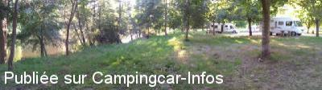

ASN = Aire de services avec stationnement nuit possible de :
BOUILLAC
(N° 671)
Accès/adresse :
Cessat D840
12300 BOUILLAC
12300 BOUILLAC
Latitude : (Nord) 44.57315° Décimaux ou 44° 34′ 23′′
Longitude : (Est) 2.15729° Décimaux ou 2° 9′ 26′′
Tarif : 2015
Stationnement gratuit
Services : 3 €
Jetons chez les commerçants
Type de borne : Artisanale
Services :


Restaurant en face
Commerces à environ 600 m
Autres informations :
Ouvert de mars à novembre
Emplacements matérialisés, ombragés
Stationnement limité 24 h
Tel : +33(0)565 431 027

Le 28/08/2012 par Thierry et Ingrid
Le 27/02/2007 par claumen
Le 25/10/2006 par rolfpeter.friedrich
de
Claudek46
le 26/04/2015 :
Le 17/04/2015, pas de possibilité de faire le plein d'eau, car le monnayeur était HS du fait que certains camping-caristes mettent des pièces au lieu des jetons prévus ; une note du maire menaçant de supprimer cette borne artisanale s'il est était à nouveau l'objet de dégradations, rien ne permet de dire si elle sera réparée. Mais nous y avons passé une nuit calme malgré la proximité de la Nationale peu fréquentée la nuit.
Le 17/04/2015, pas de possibilité de faire le plein d'eau, car le monnayeur était HS du fait que certains camping-caristes mettent des pièces au lieu des jetons prévus ; une note du maire menaçant de supprimer cette borne artisanale s'il est était à nouveau l'objet de dégradations, rien ne permet de dire si elle sera réparée. Mais nous y avons passé une nuit calme malgré la proximité de la Nationale peu fréquentée la nuit.
de
frederick
le 29/04/2014 :
aire très sympas, jetons chez les commerçants. merci à la commune de Blouillac
aire très sympas, jetons chez les commerçants. merci à la commune de Blouillac
de
croc
le 13/09/2012 :
de passage en sept 2012 toujours pas d'eau. l'aire est tres bruyante, route juste a coté.
Il vaut mieux se mettre sur l'aire de BOISSE PENCHOT qui est tres agreable et a 5 km
de passage en sept 2012 toujours pas d'eau. l'aire est tres bruyante, route juste a coté.
Il vaut mieux se mettre sur l'aire de BOISSE PENCHOT qui est tres agreable et a 5 km
de
balain
le 08/04/2012 :
de passage sur cette air, très agréable et calme. alimentation en eau en panne! dommage.
de passage sur cette air, très agréable et calme. alimentation en eau en panne! dommage.
de
Bébbo
le 28/05/2009 :
Une aire jolie au bord du Lot, ombragée, propre et, malgré la route nationale, bien calme pendant la nuit.
Une aire jolie au bord du Lot, ombragée, propre et, malgré la route nationale, bien calme pendant la nuit.
de
le 21/03/2009 :
A proximité de l'aire de camping-cars : épicerie UTILE alimentation génerale, pain, journaux, cartes postales etc. ouverte du lundi au samedi de 8h30 à 19 h non stop, le dimanche et jours fériés de 8h30 à 12 h 30, fermeture le mercredi.
A proximité de l'aire de camping-cars : épicerie UTILE alimentation génerale, pain, journaux, cartes postales etc. ouverte du lundi au samedi de 8h30 à 19 h non stop, le dimanche et jours fériés de 8h30 à 12 h 30, fermeture le mercredi.
de
ribier
le 30/03/2008 :
Endroit agréable et pratique, pour l'eau c'est aujourd'hui 3 €, jeton à retirer chez les commerces ou à la mairie.
Endroit agréable et pratique, pour l'eau c'est aujourd'hui 3 €, jeton à retirer chez les commerces ou à la mairie.
de
Charlie Mike
le 27/02/2007 :
6 CC ? J'en ai compté 20, mais au mois d'aout 2006. Enfin la nuit a été bonne... La ville charmante, la route D840 ou D940 ex N 140 est passagère mais ça se calme la nuit. Une aire très bien équipée et qui reste propre, vive l'Aveyron!
6 CC ? J'en ai compté 20, mais au mois d'aout 2006. Enfin la nuit a été bonne... La ville charmante, la route D840 ou D940 ex N 140 est passagère mais ça se calme la nuit. Une aire très bien équipée et qui reste propre, vive l'Aveyron!